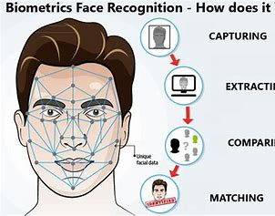

Welcome to my Portfolio website.
Hi, I'm Parth Ajit Deshpande. I'm studying Electronics and Communication Engineering at Pimpri Chinchwad College of Engineering in Akurdi. During my studies, I've found subjects like Electronic Devices, Digital Design Circuits, and Microcontrollers,etc really interesting. I also know programming languages like Python, C++,Embedded C Java, and C. Right now, I'm working on a couple of projects. One is about using AI and ML for face recognition, and the other is building a robotic arm that can work on its own. I think these projects could be a big deal in the future. I'm pretty ambitious about my career and always looking for new opportunities.
I'm currently working on a project focused on face recognition. Using advanced techniques in artificial intelligence and machine learning, we're developing a system that can accurately identify and verify individuals based on their facial features. This technology has broad applications in security, surveillance, and user authentication, and it has the potential to greatly enhance safety and convenience in various settings.
I'm also involved in a project centered around building an autonomous robotic arm. This robotic arm is designed to perform tasks independently without direct human control. By integrating sensors and intelligent algorithms, it can manipulate objects with precision and adapt to changing environments. This technology has wide-ranging applications in manufacturing, healthcare, and exploration, promising increased efficiency and versatility in various industries.
Mail:deshpandeparthajit@gmail.com
My hobbies include:
Nation First Family Second Self Last.